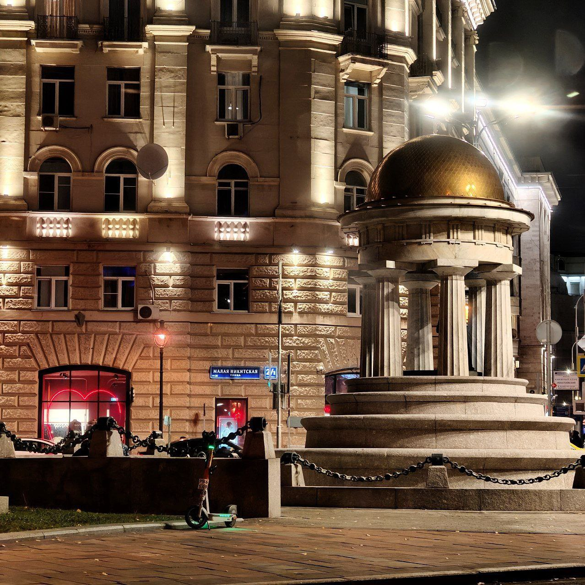
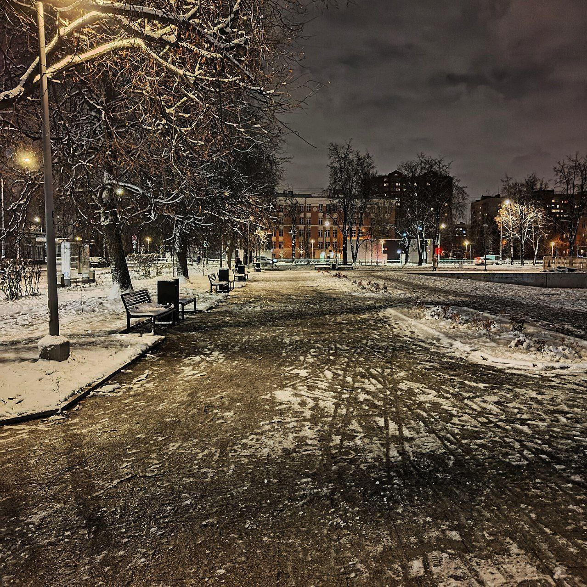
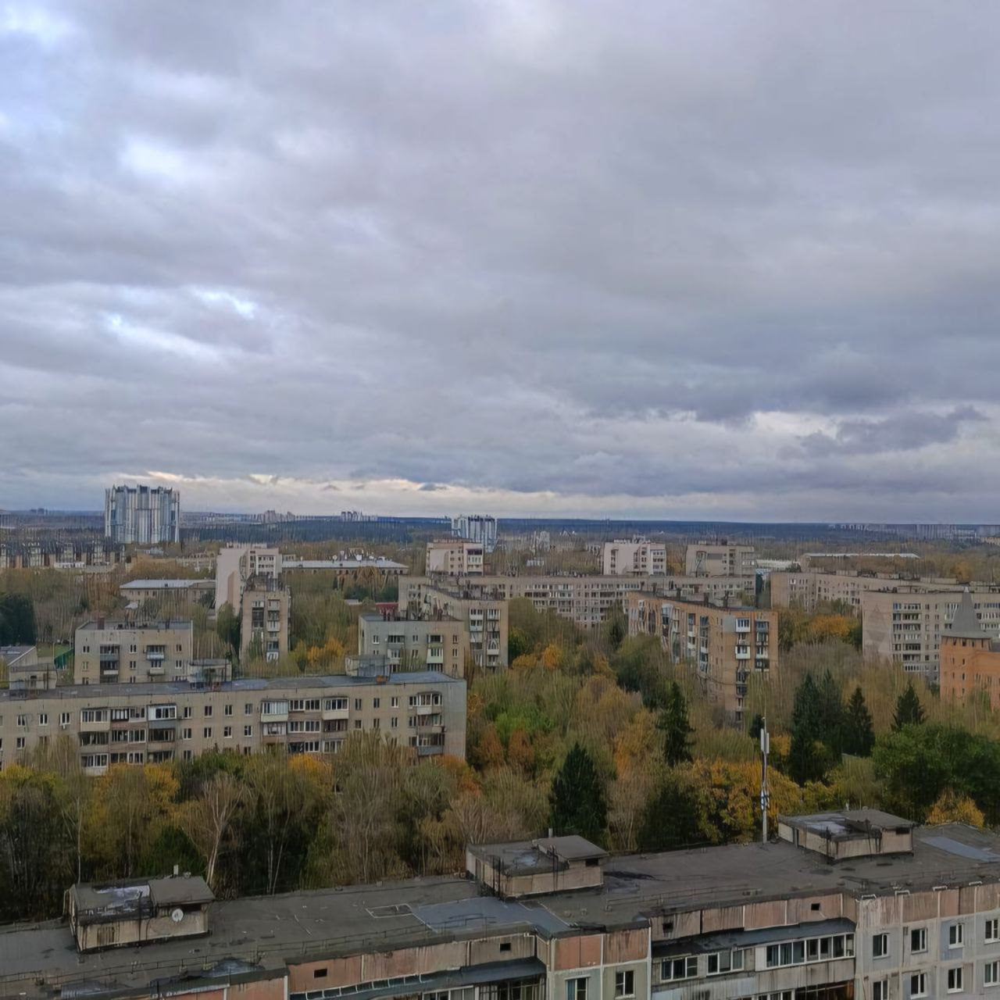
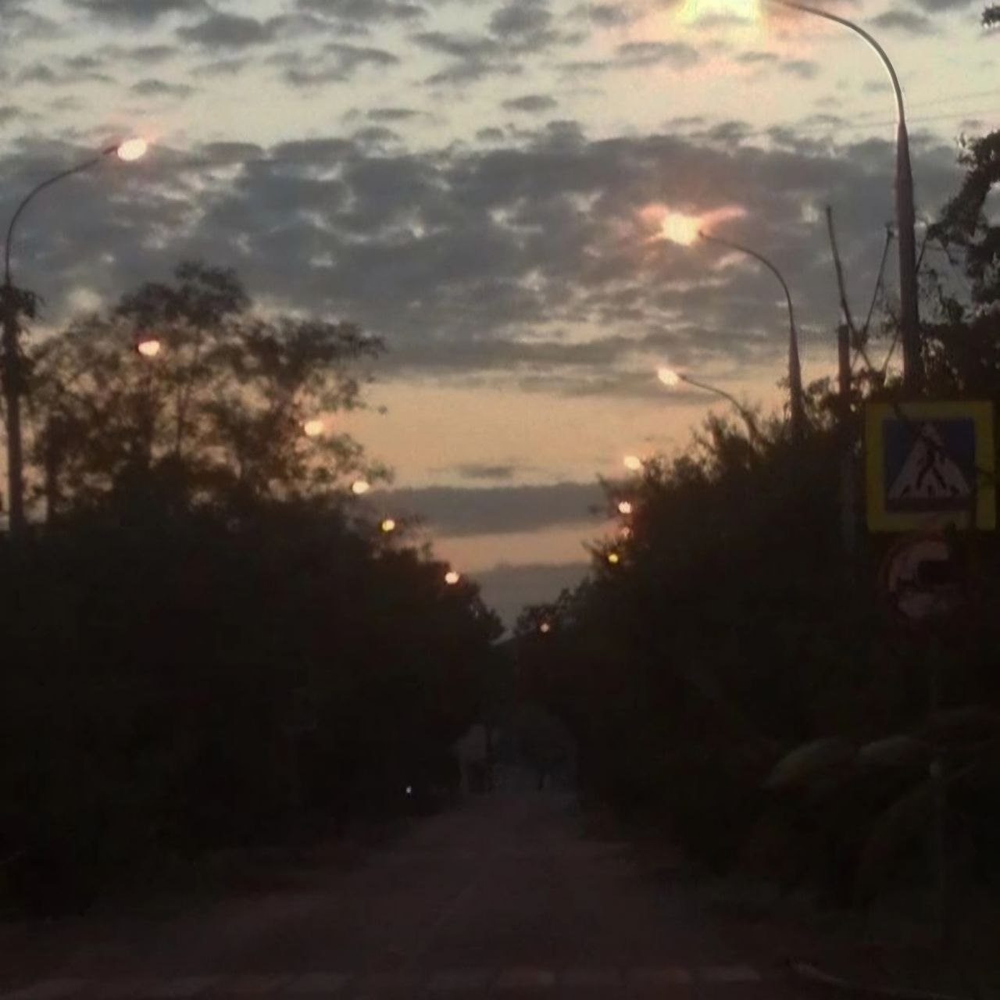
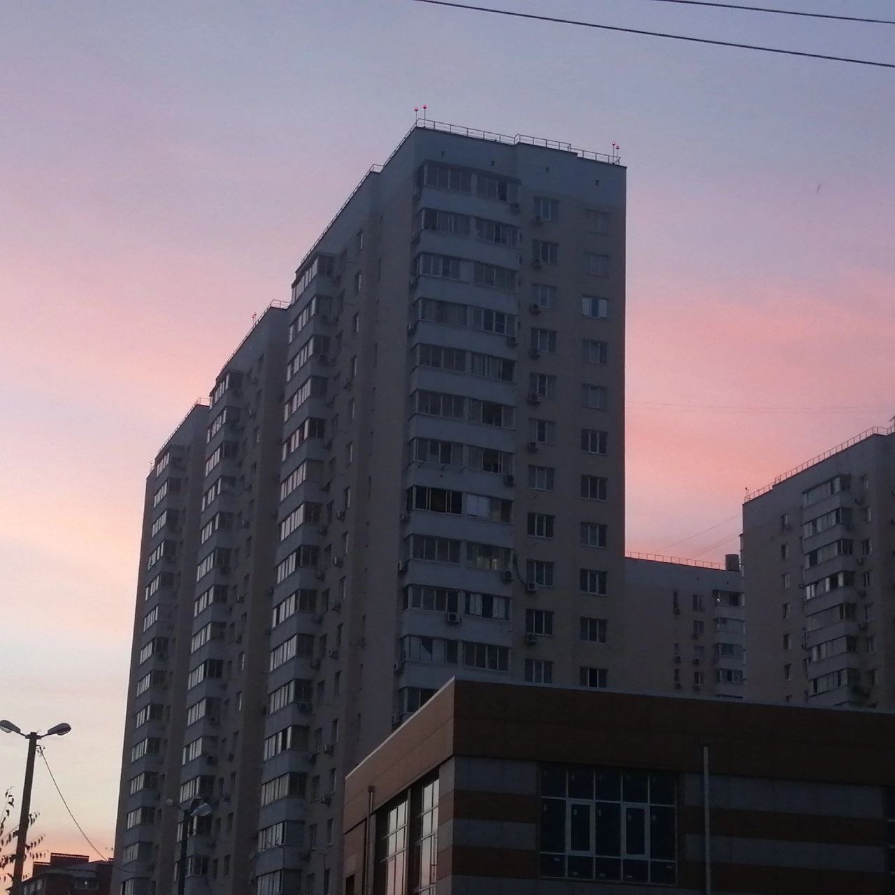
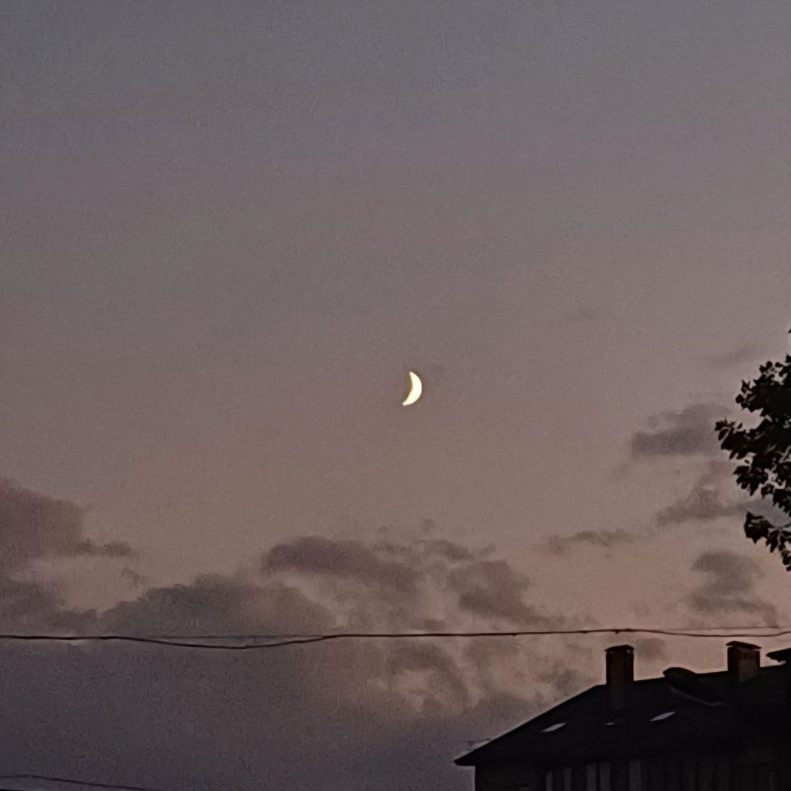

Никитские ворота в Москве

Никитские ворота в Москве. Сегодня это исторический и культурный центр города. Рядом находятся Музей-квартира А. Горького, Дом-музей К. Станиславского, многочисленные церкви и другие объекты, представляющие историческую и художественную ценность.
Зимний городской парк ночью

Покрытая снегом тропинка освещена уличными фонарями. По бокам дороги стоят скамейки, деревья украшены снегом. На заднем плане видны городские здания с освещёнными окнами. Атмосфера спокойная и тихая, с лёгким зимним освещением.
Вид на город
с высоты

Москва может быть и такая.
Вдали виднеются высокие здания, а на переднем плане — более низкие жилые постройки и деревья с осенней листвой. Небо покрыто плотными облаками, создающими пасмурную атмосферу.
Этот день не предвещал плохое

Дорога, окружённая деревьями. На фоне виден закат или рассвет с облаками на небе. Вдоль дороги установлены фонари, которые светятся. Общее освещение создаёт атмосферу сумерек.
Художник раскрасил небо

Вечернее небо, окрашенное в розово-голубые тона.
Молодая
луна

Вечерний пейзаж. В центре неба находится молодая луна в фазе узкого полумесяца. Небо окрашено в серо-розоватые оттенки, по нему проплывают несколько облаков.